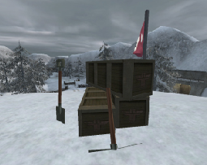
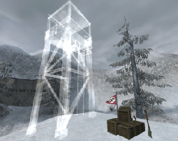

© 2003 Splash Damage, Ltd. All Rights Reserved.

| Wolfenstein: Enemy Territory Documentation © 2003 Splash Damage, Ltd. All Rights Reserved. |
|
The ability to build constructions is an enhanced feature of the engineer class. Engineers are able to construct objects within maps such as bridges, guard towers and gun emplacements in predefined locations. The construction locations should be marked by the crates model so that everyone can recognise a construction point in the map.
Each construction will have a construction class which defines how much 'charge bar' time is required to complete each stage of the construction. The speed at which an item can be constructed can be increased with additional Engineers.
While the construction is being built a translucent representation of the object will appear and then become solid when built. If a player is in the construction area while being built they will be warned to leave the area before the construction is finished. Players failing to leave the construction zone will be killed the instant the construction is complete.
A construction object which has not finished or been touched by an engineer will decay after 30 seconds (current default) to its previous deconstructed 'crates' state. Multiple stage constructions will decay back to their previous built stage.
Once the construction has been built by one team, only the opposing team can damage it. The construction class of the construction object dictates how it can be destroyed. Friendly fire will not apply to constructed objects.
Construction Classes
Most of the construction system's functionality is located in the scripting
system and only the basic parameters are present in the maps. This could
present a problem for Level Designers who have had very little experience of
scripting but the existing maps do offer a lot of workable examples to study if
you're unsure.
The construction system has 6 variables which can affect the way a constructible object will work in-game. These variables are also organized into 3 presets so that construction objects can be consistent across all maps. The main difference between each of the construction presets is the 'charge bar' times and the type of explosives that can damage the object.
The largest construction objects in the game were given the highest 'charge bar' value so that it would encourage the engineers to work together on completing objectives. The preset value of a construction should reflect its importance to the overall map objectives. The only exception to the rule is the escorted tanks which have a high health value and can be damaged by all explosives.
All constructible items must have the construction class (preset) defined upon spawning in the map. Further construction parameters can be changed after the construction class has been defined. The following table highlights the presets and what values they use.
| Construction Class (preset) | Charge Bar Req. | Construct XP Bonus | Destruct XP Bonus | Health | Weapon Class | Duration (msec) | Icon |
| 1 | 0.5 | 5 | 5 | 350 | 1* | 2500 | Grenade |
| 2 | 1 | 7.5 | 7.5 | N/A | 2* | 5000 | Satchel Charge |
| 3 | 1.5 | 10 | 10 | N/A | 3* | 2500 | Dynamite |
Please note that constructible_health only applies to construction class 1 because the other values are instantly destroyed by satchel or dynamite explosions.
The script commands below match the columns of the table above.
constructible_chargebarreq
constructible_constructxpbonus
constructible_destructxpbonus
constructible_health
constructible_weaponclass
constructible_duration
For example, if a tank takes a lot of damage and can be damaged by anything from grenades upwards, the following spawn settings would be used:
|
example_tank { spawn { constructible_class 1 constructible_health 1200 } } |
New Entities
All constructible objectives have a core set of entities which are used
everytime regardless of construction configuration. Each construction objective
must contain at least one
func_constructible
and one
trigger_objective_info
entity both linked together.
Neutral team construction objectives contain two func_constructible entities because both teams cannot own the same construction entity. The trigger_objective_info entity targets both func_constructible entities.
func_constructible
The
func_constructible
is the primary entity which specifies which team can build or destroy the
construction. The
func_constructible
is a brushwork entity and must
contain an origin brush; otherwise it will cause problems with the planting of
dynamite.
When a team plants explosives next to a construction objective the func_constructible defines where the explosives can be planted. Because some explosives have a wide damage radius be careful not to create func_constructible entities too close to each other.
The func_constructible entity has the following keys :
| targetname: | The name used in the script for referencing this entity. |
| scriptname: | The routine name in the script file. |
| track: | Construction group function. |
| wait, score, health: | Not used anymore (replaced with script commands). |
| constages: | List of construction func_brushmodel entities. |
| constages: | List of destruction func_brushmodel entities. |
The track key functions like a group name. All entities with the same track key as the func_constructible will be constructed at the same time. This is important if you want players to be warned to leave construction areas during the transparent stage of construction. If you set entities via the script to the transparent construction state then players will not get the warning message for construction.
The func_constructible entity has the following spawnflag options:
| start_built: | Starts built. |
| invulnerable: | Cannot be destroyed by explosives. |
| axis_constructible: | Can be built by the Axis. |
| allied_constructible: | Can be built by the Allied. |
If the func_constructible entity is not assigned to a team then the map will fail to load. If both teams are selected on the spawnflag then the default team will be Axis.
Hint: Keep in mind that some explosives have a very wide destructive radius and can be placed some distance away from the func_constructible and still be effective at destroying the construction objective.
trigger_objective_info (TOI)
This entity is used to represent other entities (func_constructible,
func_explosive,
misc_commandmap_marker
) on the command map. The state of the construction objective determines what
icons are displayed on the command map.
The trigger_objective_info is a brushwork entity and must contain an origin brush; otherwise it will appear half way between its current map position and "0 0 0" map position on the command map. The brushwork area of the trigger_objective_info entity specifies where the player can build, a 'pliers' hint icon and an on screen message.
Each map is limited to a maximum of 18 trigger_objective_info entities. This total usually includes command posts, health / ammo cabinets, onscreen hint areas and all constructible objectives. Some constructible objectives may only exist in certain game types. (The map 'Fueldump' hits the TOI limit)
The trigger_objective_info entity has the following keys :
| targetname: | The name used in the script for referencing this entity. |
| scriptname: | The routine name in the script file. |
| shortname: | Name on the command map. |
| objflags: | Used for pulsating icons on the command map. |
| track: | Onscreen text message for what you are near. |
| customimage: | Replaces the default icon for both teams. |
| customalliedimage:: | Replaces the default icon for the allied team only. |
| customaxisimage: | Replaces the default icon for the axis team only. |
| infoAxis/infoAllied: | Not used anymore, do not use. |
| score: | Replaced with script commands. |
The trigger_objective_info entity has the following spawnflag options:
| axis_objective: | Only works with 'func_explosive' entities. |
| allied_objective: | Only works with 'func_explosive' entities. |
| tank: | Will use a tank icon on the command map. |
| is_objective: | Will use a standard objective icon on the command map. |
| is_healthammocabinet: | Will use a health / ammo cabinet icon on the command map. |
| is_commandpost: | Will use a command post icon on the command map. |
If the trigger_objective_info entity does not target any other entities it will still exist in the map. The entity will still produce "You are near ." messages and if the axis/allied objective spawnflags are set, it will still interact with explosives.
Using the script command setstate the trigger_objective_info entity can be switched on and off in the map for different game types. Once the entity has been switched off all relevant command map icons disappear as well.
Hint: Try and keep the trigger_objective_info entity some distance away from the func_constructible entity, so that any Engineers building the construction cannot stand in the construction area and get killed when it's complete.
Single Team
|  |
|  |
Construction crates and skins: ( misc_gamemodel )
models/mapobjects/cmarker/cmarker_crates.md3
models/mapobjects/cmarker/axis_crates.skin
models/mapobjects/cmarker/allied_crates.skin
Flag and skins: ( misc_gamemodel )
models/mapobjects/cmarker/cmarker_flag.md3
models/mapobjects/cmarker/axis_cflag.skin
models/mapobjects/cmarker/allied_cflag.skin
Additional key/values for the flag model:
| modelscale: | 0.4 |
| frame: | 0.4 (Total amount of animation frames) |
| spawnflags: | 2 (Start entity animated) |
The flag and construction crate models are made from misc_gamemodel entities with targetname and scriptname keys so that they can be referred to by the script.
Create a rough set of clip brushes which mirror the shape of the construction crates model. Then create an origin brush, select all the previously created clip brushes and converted them into a func_static entity. Select the func_static entity and set the targetname and scriptname keys so that it can be referred to by the script.
Create the constructible objective from brushwork and position it a reasonable distance from the construction crates model. Create an origin brush, select the constructible objective brushwork and convert into a func_constructible entity.
Note: If you want to create the constructible objective from a model then use clip brushes for the func_constructible instead. It's important that the func_constructible entity is made from brushes because the explosive's radius has to hit something.
Select the func_constructible entity and set the targetname and scriptname keys so that it can be referred to by the script and targeted by the trigger_objective_info entity. Set the spawnflags to the relevant team which can construct the objective. (Only one team should be selected.)
Finally create a trigger_objective_info brushwork entity around the construction crates model and target it at the func_constructible entity. Allow enough room for the Engineers to be able to move around the construction while building. Setup all the relevant keys and spawnflags for the trigger_objective_info entity as documented above .
Scripting
All constructive objectives require scripting to work. In order for Level
Designers to create maps for Enemy Territory they will need to learn how to
write scripts. This may be a simple case of cut and paste from the original
scripts or may involve creating new script content.
In order to explain scripting this documentation defines certain words with regards to scripting. Wherever possible certain words/phrases have been hyperlinked to a glossary.
Here follows a quick primer on the how, where and what of scripting. This is by no means a complete guide to scripting but all of the maps that come with the original game do have script files which can be used as examples. Open them up and have a look .
Back to Basics
The script file is located in the maps directory with a ".script" file
extension. The script filename has to be the same as the map filename. (Eg.
'oasis.bsp', 'oasis.script')
The script file is made up of routines which define what various entities do and how they react to game events. Each entity in the map has the possibility to run a routine in the script file. To enable an entity to run a routine in the script file it needs a targetname and scriptname key with relevant values.
For example: targetname, "alliedmgnest" and scriptname , "alliedmgnest".
It's recommended that the targetname and scriptname values are the same so it's easier to debug the script and map for possible errors. (Technically not all of the entities require the targetname and scriptname keys to be defined but it's recommended)
Each entity routine is broken down into functions which are triggered by various game events. For example: The function spawn is triggered when the entity is spawned into the map at the beginning of the game.
Certain functions exist for all entities regardless of what type they are. The standard functions are spawn, trigger, pain and death. Some entities have further functions which are specific to what they can do in game.
The script can run several entity routines at once, but each routine can only run one function at once. For example if any function uses a wait command it will stop all other functions for that entity routine. Because of this limitation several entities maybe required in order to perform several tasks at once.
Each entity routine can use / define up to 8 local variables. These local variables cannot be referenced outside of the defining routine. The script system also supports up to 10 global variables which can be used / referenced by any routine / function in the same script.
Script variables can be used to store values which can determine if game events have been completed or what state they are currently in. For example in the map 'Radar' a variable is used to count the total amount of radar parts taken from the axis base.
Construction Script Functions
The func_constructible entity has 5 basic functions
as defined below:
| spawn: | This function is run the first time upon starting the map. All spawn functions
should have a wait command before processing any other commands because not all
entities are initially ready when the map is first loaded.
All constructible items in Enemy Territory must setup their construction class when they spawn. This determines how much 'charge bar' time to be used while constructing. (There are currently 3 types of construction classes defined.) The construction materials should be made visible (default) and the main construction elements made invisible.
|
| buildstart: | This function is called once the construction has been started. The various
construction elements are set up to be displayed in a translucent state. This
shows all players where the construction is going to be built.
|
| built: | This function is called once the construction has been finished. All
construction materials are made invisible and the main construction elements
are visible.
|
| decayed: | If the construction has not been touched by an engineer for 30 seconds (current
default) then this function is called. The construction elements are made
invisible. If this function is not defined then the construction will remain in
a translucent state.
|
| death: | This function is called once the construction has been destroyed. All
construction materials are made visible and the main construction elements are
made invisible.
If the construction involves a MG entity then it must be repaired by the script at this point. If the MG entity was damaged during the destruction of the construction object then the MG will be built in a damaged state. |
The backbone of the construction system is one script command called setstate . This command allows entities to be switched into 3 different states of 'default / invisible / underconstruction'. Combined with the various functions defined above the construction system is not overly complex to setup.
Neutral Team
A neutral construction is no different to a single stage construction except
there is one for each team, both linked to one
trigger_objective_info
entity. The
func_constructible
entity can only be associated to one team so neutral constructions need two
constructible entities.
It is recommended that both team constructions are different so that the players can easily tell from a distance who built the construction in the first place. The trigger_objective_info entity controls which func_constructible is built and which script routine is active.
Multiple Stages
The construction system can support up to 3 different stages for construction
(stage1, stage2, final) and 2 different stages for destruction. Depending on
which happens to the func_constructible depends on which stage will be active
as the diagram below illustrates:
The best way to make a multiple staged construction is to create the final object first and set it up like a single staged construction. Once you have a single stage construction working then add more stages to it.
Multiple stage constructions use two new keys for the func_constructible entity.
| constages: | List of construction func_brushmodel entities. |
| constages: | List of destruction func_brushmodel entities. |
All additional construction/destruction stages need to be setup as func_brushmodel entities with targetname key. The value of the targetname key will appear in the constages or desstages lists.
For example if the construction stage 1 and 2 entities have targetname key values of 'constage1' and 'constage2', then the constages key for the func_constructible will have a value of 'constage1;constage2;'
Note: The constages, desstages lists must be separated by semicolons and have no spaces. Only need to use these keys if creating multiple stage constructions.
Wherever the func_constructible is in the map, all the construction/deconstruction stages will appear as well. It does not matter if you create the stages elsewhere in the map or at the same space, all stages will be displayed at the same location.
The last stage in a multiple construction is always referred to as 'final' in the script. If you are only creating a 2 stage construction then the script will use 'stage1' and 'final' only.
An Example Multiple Stage Construction Script
|
//============================================ // Test multiple stage construction //============================================ constructfinal { spawn { wait 200 constructible_class 1 setstate constage1 invisible setstate constage2 invisible setstate constructfinal invisible setstate desstage1 invisible setstate desstage2 invisible setstate construct_stage1 default setstate construct_stage2 default setstate construct_stage3 default } //============================================ // Stage 1 //============================================ buildstart stage1 { wm_announce "Stage 1 started ..." } built stage1 { setstate construct_stage1 invisible wm_announce "Stage 1 BUILT!" } decayed stage1 { setstate construct_stage1 default wm_announce "Stage 1 DECAYED!" } death { setstate construct_stage1 default wm_announce "Stage 1 DEATH!" } |
Note: The 'constructfinal' script routine is the func_constructible entity. The 'constage1', 'constage2', 'desstage1' and 'desstage2' are the targetname key values for the func_brushmodel entities.
The 'construct_stage1', 'construct_stage2' and 'construct_stage3' are the construction materials. (The crates model and clip brushes)
|
//============================================ // Stage 2 //============================================ buildstart stage2 { wm_announce "Stage 2 started ..." } built stage2 { setstate construct_stage2 invisible wm_announce "Stage 2 BUILT!" } decayed stage2 { setstate construct_stage2 default wm_announce "Stage 2 DECAYED!" } destroyed stage2 { setstate construct_stage2 default wm_announce "Stage 2 DESTROYED!" } //============================================ // Stage 3 //============================================ buildstart final { wm_announce "Stage 3 started ..." } built final { setstate construct_stage3 invisible wm_announce "Stage 3 BUILT!" } decayed final { setstate construct_stage3 default wm_announce "Stage 3 DECAYED!" } destroyed final { setstate construct_stage3 default wm_announce "Stage 3 DESTROYED!" } } |
Note: Each stage has four functions which are run depending on the state of the func_constructible entity. Some of the functions in this example script don't actually do anything but are included so that you can use them if you want.
The final stage of construction is always called 'final', so if you require only 2 stages of construction then only use 'stage1' and 'final' sections of the above sample script.